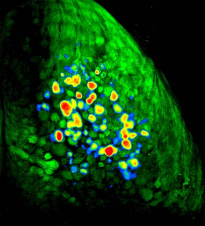
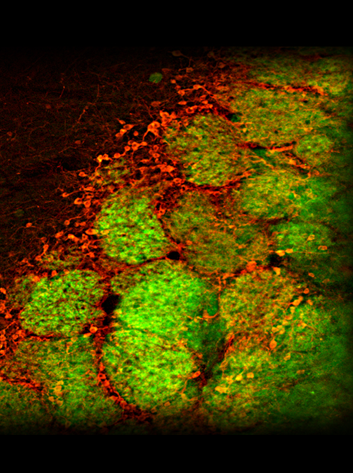
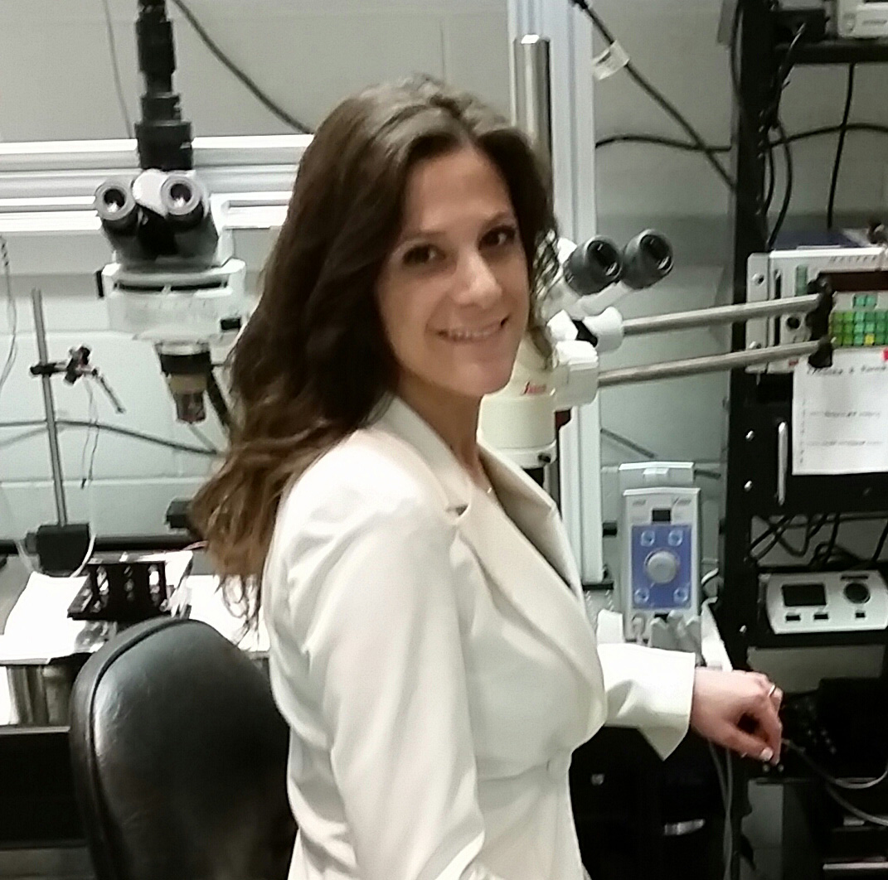
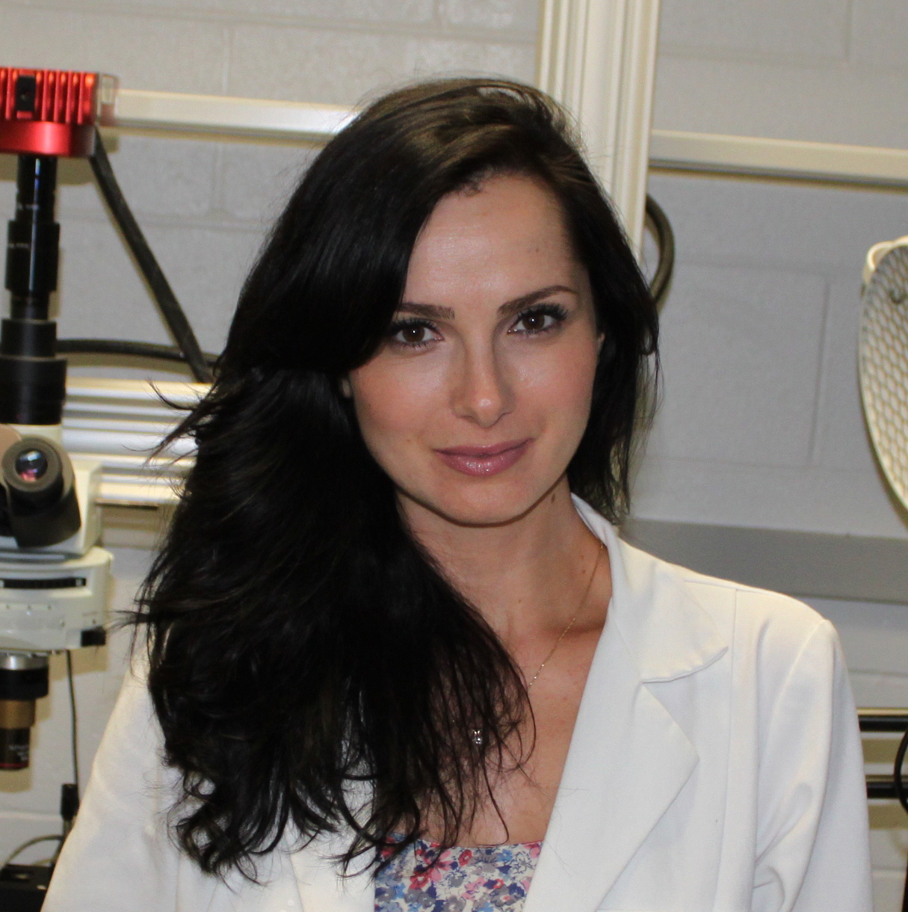

RESEARCH AREAS
Imaging Neural Representations of Odors
Using genetically engineered mice, we can look through a window implanted in the skull and watch neurons in the brain's olfactory bulb light up in characteristic patterns as the animal smells different odors.
Neural Processing of Odor Signals
Sensory input to the brain from the nose is strongly modulated by brain circuitry that takes into account the animal's sensory environment and the meaning or significance of each odor. We study how the brain uses learned information to guide olfactory processing and perception.
LAB MEMBERS
John P. McGann, PhD

Lab Director
Professor of Behavioral & Systems Neuroscience, Psychology, Cognitive Science, Otolaryngology
Marley Kass, M.S.
PhD Student
Rutgers Psychology
Michelle Rosenthal, M.S.
PhD Student
Rutgers Psychology
AFFILIATIONS
Funding
Our research has been generously funded by: